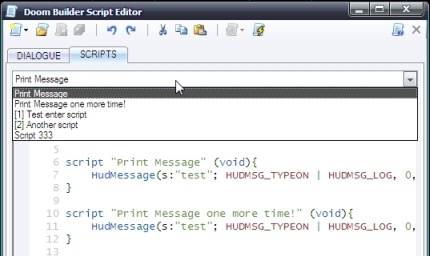

GZDoom Builder includes many features to help you to assign and edit scripts easier. The Script editor now has a "Script names" drop down, which allows you to view and select individual scripts faster. Pseudo-named scriptsIf you add a comment after the script's opening brace like so:...script 1 (void) { //My Pseudo-named script ... } ...it will be used as the script name in the "Script names" drop down and in the Thing and Linedef Edit forms drop downs (the example script will be named as "[1] My Pseudo-named script").Notice: "Script names" drop down items are updated when the script is compiled successfully. |
 |
Thing and Linedef scripts can now be set much easier. Notice: to remove a named or regular script, clear the script selector text box |
|
| If a Thing or Linedef has a named script attached to it, it will be shown in the info panel. |